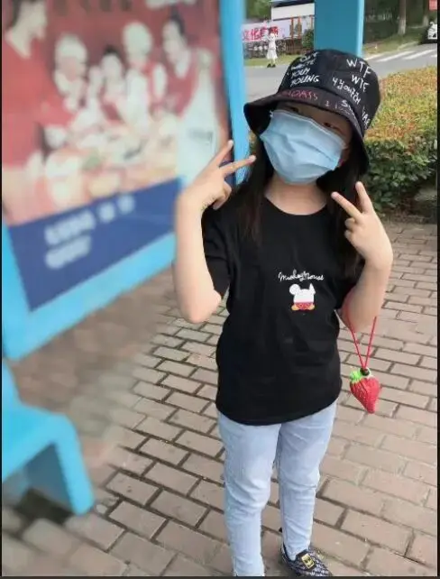
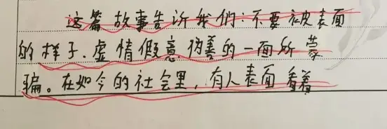
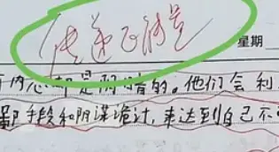
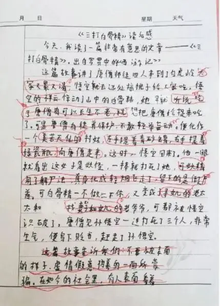

10天前的一个下午，在上完两节语文课后。
五年级的小女孩缪可馨从教室走出，然后翻越栏杆从四楼一跃而下。
就此，一个可爱的生命倔强地离开了这个世界。

让小女孩以死抗争的是语文老师给她定的莫须有罪名 :负能量！
原来在小女孩跳楼之前的两节语文课上，她关于《西游记》中三打白骨精的读后感受到了老师的批评。
小女孩通过白骨精的故事，在文章末尾总结道：
”不要被表面的样子、虚情假意伪善的一面所蒙骗。
在如今的社会里，有人表面看着善良，可内心却是阴暗的。
他们会利用各种各样的卑鄙手段和阴谋诡计，来达到自己不可告人的目的。“

对于这段话，老师认为太负能量，所以用红色的笔画出，然后要求到：传递正能量。

原来，小女孩上的不是语文课，而是政治课。
小女孩的话触发了某些敏感神经，所以被定了罪。
记忆中，最近一次被这样定罪的是李医生，李医生因为散布了负能量，所以被蔡书记训诫：你是破坏武汉市向前发展的元凶。
这场宣判后来带给大家的灾难有目共睹，我不敢乱言。
而缪可馨的悲剧，绝不亚于上一场。
毕竟，大家经常说，有趣的灵魂万里挑一。
而小女孩遭遇的正是灵魂的谋杀。
我们可以看看小女孩的原文：
今天，我读了一篇非常有意思的文章——《三打白骨精》，出自罗贯中的《西游记》。
这篇故事讲了唐僧师徒四人来到了白虎岭，大家又累又渴，悟空就去远处摘桃子给大家吃。
悟空的祥云惊动了山中的白骨精，她早就听说吃了唐僧肉可以长生不老，就想把唐僧给捉来吃了。
可是唐僧有徒弟保护，不敢轻举妄动。
便化作一个美若天仙的村姑，左手提着青砂罐，右手提着绿瓷瓶，向唐僧走来。
这时，悟空回来了。
他一眼就看出这女子是妖怪，一棒就打死了她，可妖怪用了解尸法，真身化成轻烟飞走了，留下的是假尸首。
可白骨精一不做二不休，又变成了寻女儿的老太太和找妻子女儿的老爷爷，可都被悟空识破了。
唐僧见孙悟空一连打死了三个人，非常生气，便写下贬书，赶走了孙悟空。
这篇故事告诉我们：不要被表面的样子，虚情假意伪善的一面所蒙骗......

经过老师修改后，变成了这样：
今天，我读了一篇非常有意思的文章——《三打白骨精》，出自罗贯中的《西游记》。
这篇故事讲了唐僧师徒四人来到了白虎岭，悟空远处摘桃子。
惊动了山中的白骨精，她早就想把唐僧给捉来吃，便化作一个村姑。
悟空回来了，他一眼就看出这女子是妖怪，一棒就打死了她。
可白骨精一不做二不休，又变成了老太太和老爷爷，可都被悟空识破了。
唐僧见孙悟空一连打死了三个人，非常生气，便写下贬书，赶走了孙悟空。
所有生动的、有画面感的文字都被老师和谐了，剩下的只是空洞的话语。
对于这一点我自己感触非常深。
自从写自媒体后，经常有人给我留言，夸赞我文章写的好。
其实，讽刺的是，我语文最差，以前经常拉分，我对语文一点也不感兴趣。
我以前也没有想到有一天我会写这么多文字。
开始写文章，更多是因为自己想拍电影，但是拍电影没有那么简单，所以就先从影评和剧本开始。
记得写第一篇文章时，我脑子中一大堆高大上的概念，但落笔时却屁都放不出一个，憋了一个月，才写出一段无聊的话。
就这样硬着头皮写了两三年，后来我才恍然大悟，原来我过去被误导了，我被我十几年的语文教育误导了。
在我最灵动、最充满好奇心的时候，老师让我写了大量抽象的东西。
这不仅把我的脑子弄坏了，更可怕的是，这个过程让我对语文基本失去了兴趣。
要不是这几年有机会，可以让我按照自己的兴趣和思考来重新探索，我还一直会以为我语文根本就不行。
现在我终于知道，我要做的就是把一个观点表达清楚就好了，并不是动不动就爱国，动不动就歌颂大自然，动不动就来几段荡气回肠的排比句。
所以，看到老师给小女孩的批注，我心里面是非常难过的，不知道有多少个文豪和思想家就在这个过程中被废了。
所以，站在这个层面，小女孩背后的悲剧丝毫不亚于李医生的悲剧。
相比于看的见的灾难，这种看不见的、无形的灾难更加难以估量。
因为祖国的未来就被这样抹杀了，有思想的、有追求的、 愿意说真话的被边缘，甚至被逼自杀。
而留下来的乖乖仔，长大后只会变成家长群里泯灭良知、丧失独立思考能力，齐刷刷为老师点赞的精致利己者。
这是我们的悲剧，真的希望我们的镜头能从报道美国暴乱的激情中抽出一点点，来关心关心这个可怜的女孩。
也希望大家能明白，之所以这么强调正能量，是因为我们的空气不能正常流动，所以只能有一种声音，只能有一种能量。
因此，所谓的正能量，其实是一种不容挑战的话语体系和舆论姿态。
这个正能量天生就是傲慢的，过去没有因为李医生而停止，将来也不会因为这个小女孩而停下来。
而对于普通人来说，高喊正能量是对权力的一种讨好，是为求自保的一种随波逐流，某种程度上和过去跪下来喊吾皇万岁差不多。
但那么多悲剧告诉我们，不论是有意还是无意，这种高喊正能量是沾血的。
因为，这不仅背离了真相，无视了无辜者的眼泪，还是对自己良心的背叛。
我们作为单独的个人，需要深刻认识到这一点，并警惕自己骨子里的奴性。
这样，我们才有可能在暴风雨中为自己的孩子撑一把伞，告诉孩子：和别人不一样没有错，老师也并不是全对。
最后，点一首歌送给所有家长，这首歌描述了一位小女孩被变态老师侵犯时的绝望和无助。
希望能够提醒我们，孩子的教育和成长，家长是第一责任人。
我们拼尽全力花了那么多心思为孩子点了一桌菜，但荒谬的是，我们只负责出钱出力。
却在还没有搞清楚菜品好不好吃、有没有变质的情况下，我们便义无反顾地将自己的孩子送了过去。
这是多么大的愚蠢！
滑动下方
查看完整诗词
▼
Winter On The Weekend - Julia Stone
周末的冬天 - Julia Stone
He's a dog
他是只狗
But he's dressed up like a sheep
但他把自己扮成一只绵羊
Got bones all through the backyard
叼根骨头在后院里跑来跑去
But he likes to drink tea
但他喜欢喝茶
We play scrabble on the weekend
我们在周末玩拼字游戏
And he talks about the weather most of the time
他大多数时候都在谈论天气
I thought my sacred body
我想起了那神圣的爱情
With him it would be fine
跟他在一起一切会变得非常美好
And I walked into the doorway
我步入大门
He slid across the room
他穿过房间
My heart it started racing
我开始心跳加速
I just didn't know what to do
我不知所措
And he laid me on the floor
他让我躺在地板上
And my screams they go unheard
他们没听到我的尖叫声
The lady living next door
住在隔壁的那个女人
Well she's six feet under the dirt
她就被埋在地底
Daddy why don't you protect me
爸爸你为什么不保护我
Someone's gonna hurt me
有人要伤害我呀
There's nothing I can do
而我却无能为力
Daddy why don't you protect me
爸爸你为什么不保护我
Someone's gonna hurt me
有人要伤害我呀
There's nothing I can do
而我却无能为力
He's a dog
他是只狗
But he's dressed up like a sheep
但他把自己扮成一只绵羊
He's got bones all through the backyard
叼根骨头在后院里跑来跑去
But he likes to fool me
但是他就喜欢愚弄我
And I travel through the doorway
我穿过大门
I thought I'd be fine
本以为自己会相安无事
But it's not the way it's gonna go this time
但是这一次并不能如愿
Daddy why don't you protect me
爸爸你为什么不保护我
Someone's gonna hurt me
有人要伤害我呀
There's nothing I can do
而我却无能为力
爸爸你为什么不保护我
Somebody is going to hurt me
有人要伤害我呀
There's nothing I can do
而我却无能为力
And all this time I needed you
一直以来我都需要你
And all this time I wanted you
一直以来我都需要你
You can't hear me now
你现在却听不到我的声音
Can't hear me now
现在却听不到我的声音
Like you do
好像你听得到似的
Daddy why don't you protect me
爸爸你为什么不保护我
Someone's gonna hurt me
有人要伤害我呀
There's nothing I can do
而我却无能为力
Daddy why don't you protect me
爸爸你为什么不保护我
Somebody is going to hurt me
有人要伤害我呀
There's nothing I I can do
而我却无能为力
-END-
推荐阅读
▼
（点击文字即可获取全文）
电影里的爱国表达
这里没有挑逗你眼目情欲的小鲜肉
也没有挑动你肉体情欲的段子
更没有膨胀你今生骄傲的鸡血
我们只在乎那些最质朴真诚的作品
在那里我们才能恢复真正的想象力
我们也坚信这才是我们真正需要的

ID:Six_hundred_hits
长按二维码，一键关注
【六百击】